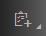
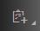

Assign Sender and Receiver Components
Context
Procedure
- Open the integration flow in the editor.
-
From the palette, choose
 Participants
Participants  () and then Sender or
Receiver.
() and then Sender or
Receiver.
-
Only relevant when you assign a Sender: For certain adapter types,
you need to specify the inbound authorization.
To do this, select the configuration interface of the associated sender adapter.
In case the Authentication Type option is still displayed for the sender participant, you might have created this integration flow shape some time back or you have selected a certain product profile where inbound authorization is still be performed per sender participant.
In that case, either proceed with the following step or create a new sender participant shape (and, in that case, continue configuring the authorization option in the associated sender channel).
More information: Adapter and Integration Flow Step Versions
-
When you specify the Authentication Type as part of the
Sender, consider the following.
You have the following options to authenticate the sender.
-
Role-based Authentication
Select this options if you like to configure one of the following use cases:
-
Basic authentication
-
Client certificate authentication with certificate-to-user mapping
-
-
Client Certificate Authentication
Select this option if you like to configure the use case that the permissions of the sender are to be checked on the tenant by evaluating the distinguished name (DN) of the client certificate (sent by the sender).
Choose Add… to browse and add an authorized client certificate or enter the Subject DN and Issuer DN manually.
Which option you choose, depends on the combination of authentication and authorization option you like to configure for inbound calls.
-